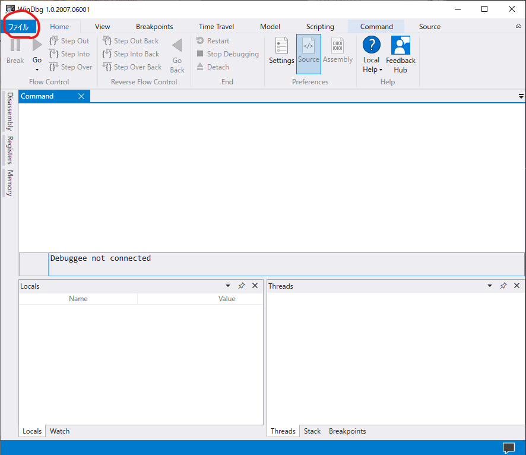
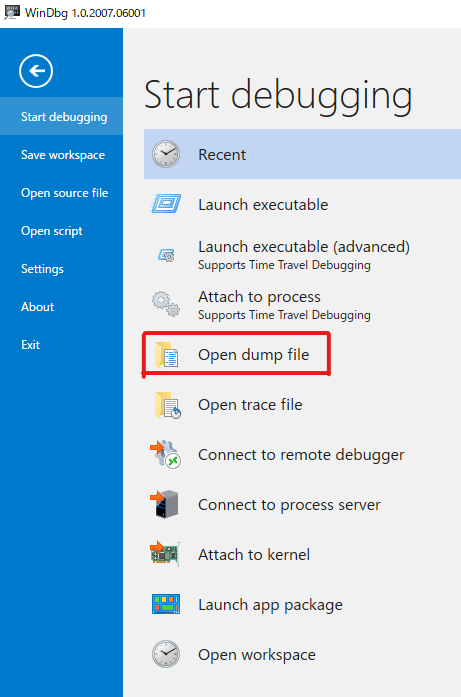
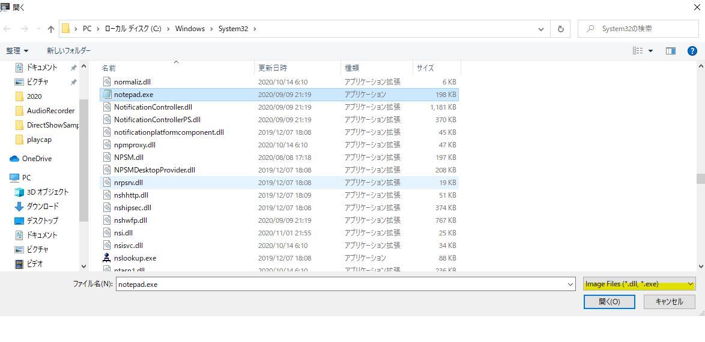

こんにちは、Japan Developer Support Core チーム 平田 a.k.a ぴろとです。本日は WinDbg を使用して、EXE や DLL といった実行形式のバイナリ ファイルをダンプ ファイルのように開く方法をご紹介します。また、この方法を活用して、モジュールに実装された関数のアドレスについても確認することができますので、あわせてご紹介します。次回以降ご紹介するダンプ解析のテクニックでも関数のアドレスについては正しく理解している必要がありますので、是非、実際にコマンドを実行してご確認いただけましたら幸いです。
初めてインストールする方は以下のダウンロードページからダウンロードしてください Windows 用デバッグ ツールのダウンロード
EXE / DLL / SYS ファイルについて
これらのファイルは、PE Format というフォーマットに準じてビルドされたものになります。通常のネイティブ コードでビルドされたものは、実行領域としてマシン語として格納されていて、CPU はこのマシン語をベースに実行されるものとなります。
Visual Studio では、ビルドをした際にデバッグ シンボル ファイルを出力させることができます。こちらのファイルと合わせて PE Format のモジュールを見ることで、より多くの情報を確認することができます。
特に重要な情報は、このマシン語がモジュールの先頭からのオフセットでどの関数が実行されているのかを求めることができます。例えば、hogehoge.dll + 1000 の箇所にて、クラッシュした場合をイメージしてください。このままだと、実際にどの関数なのかはわかりませんが、hogehoge.dll + 1000 の箇所に、定義されている関数を求めれば、関数の特定は容易になります。
実際に notepad.exe をダンプとして開いてみましょう。コマンドラインからは、以下のコマンドを実行します。
windbg -z notepad.exe
もし、Windbg Preview を利用している場合には、以下の画面から実施します。
メニューから [File] を選択します

Open dump file を選択します。

最後に、右下の拡張子を exe / dll にして、notepad.exe を開きます。

ここまでできてしまえば、あとはモジュールの先頭のアドレスを確認します。
0:000> lm
start end module name
00000001`40000000 00000001`40038000 notepad (pdb symbols) C:\ProgramData\Dbg\sym\notepad.pdb\17F6F0A80039D425B20169009E11D8221\notepad.pdb
ここで 1`40000000 が先頭のアドレスであることがわかりますね。
次に、wWinMain 関数を探しましょう。
0:000> x notepad!wwinmain
00000001`4000b090 notepad!wWinMain (wWinMain)
ここで、b090 のオフセットであることがわかります。つまり、モジュールの先頭から、**+b090** が main 関数のエントリポイントであることを確認できました！
今度は、逆引きです。ln コマンドを使って、オフセットを足しこんだアドレスをパラメーターとして渡します。
0:000> ln 1`4000b090
Browse module
Set bu breakpoint
(00000001`4000b090) notepad!wWinMain | (00000001`4000b454) notepad!UpdateStatusBar
Exact matches:
おお！ notepad!wWinMain のオフセットの部分が求まりました。
今回はここまでとなります。
本ブログの内容は弊社の公式見解として保証されるものではなく、開発・運用時の参考情報としてご活用いただくことを目的としています。もし公式な見解が必要な場合は、弊社ドキュメント (https://learn.microsoft.com や https://support.microsoft.com) をご参照いただくか、もしくは私共サポートまでお問い合わせください。